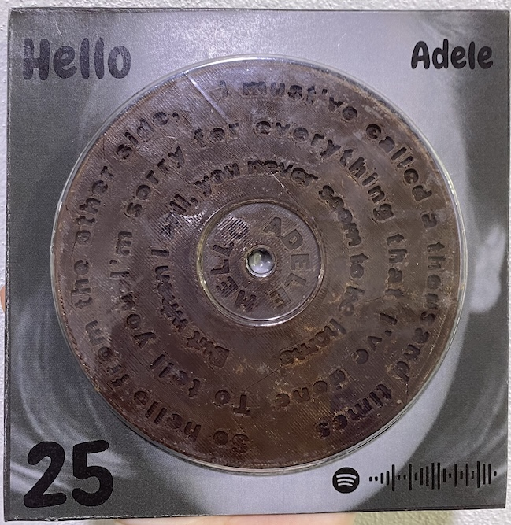

Examples of projects I have made in University
These are a collection of projects that I have made in Food Technology, Wood Technology, electromechanics and Textiles.

Click here to view my portfolio for my Adele Record.
TECH213 - Food Industries
Food design project
Document the design, development, production and critique of a moulded food product.

TECH205 - Design in Timber
Upholstered Low Stool
Design and manufacture a low stool as indicated by the Taronga Zoo design brief.

TECH204 - Design in Textiles
Set of Pyjamas
Designed and sewed a paired of matching pyjamas with a matching carry bag and incorporated screen print